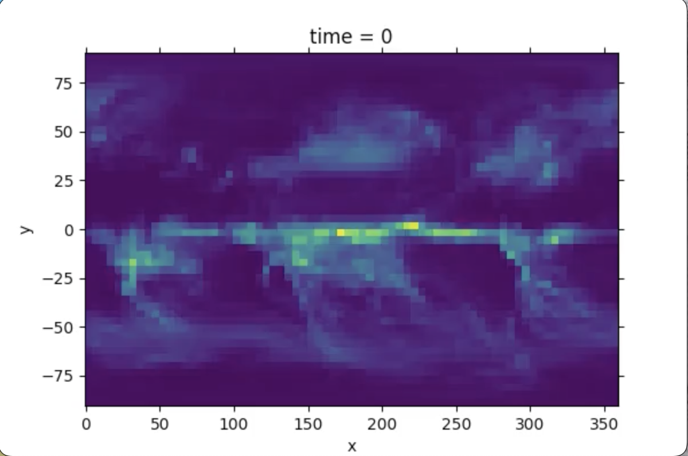

|
Colin Commans I'm a graduate of UC San Diego majoring in Math and Computer Science. I am currently seeking employment. At UCSD, I have embraced the opportunity to explore and refine my passion for problem solving by taking on rigorous and challenging courses. A lifelong love of puzzles has always fueled my interest in math, and I try to use coding as a tool to creatively visualize and ground the abstract concepts I have encountered in my studies. I certainly plan to keep learning math on my own after college and hope to continue solving complex problems creatively wherever my career ends up taking me. Please check out my projects below to learn more about my interests and skills, and feel free to reach out with any questions! |

|
ProjectsI'm interested in machine learning algorithms, deep learning, and generative (particularly adversarial) AI. |
|
|
Image Colorization cGAN
PyTorch, GANs Demo Implemented a conditional GAN to colorize images. Trained on a 10k-image subset of the COCO dataset, conditioned on class label and edge map. Generator developed with U-Net architecture and training loss a mixture of L1 and adversarial. |
|

|
Climate Prediction Model
PyTorch, FNO Report Developed climate prediction model for Kaggle competition in a deep learning class. Trained a Fourier Neural Operator to predict temperature and prediction for a decade given greenhouse gas emissions. |
 
|
LSGAN
PyTorch, GANs Re-implemented the Least Squares Generative Adversarial Network (LSGAN) framework, exploring challenges such as vanishing gradients and mode collapse. Experimented with different parameterizations and loss functions (Hinge, L1) on datasets like EMNIST, KTH-TIPS, and Tiny ImageNet. |
 
|
Predictive Model: Sentiment Analysis of Text
scikit-learn, Flask Developed a sentiment analysis model to predict positive or negative text from Amazon book reviews. Data preprocessing, model optimization via GridSearch, and a Flask web app enable real-time sentiment predictions. |
Miscellanea |
Technical Skills |
|
Selected Coursework |
|
Personal |
The Encyclopedia Project (Past Lecture Notes) |
|
Website source code taken from Jon Barron's. |